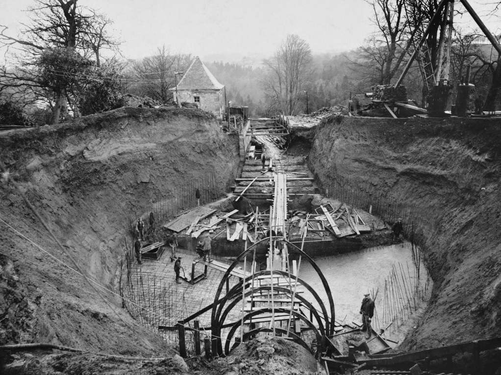

Lanark to Sloy – a look at early Scottish Hydro
21st April 2025"Is the aesthetic loss caused by the seasonal disappearance of the river at Bonnington and Corra Linn not more than counterbalanced by the romance and splendour of the vision of the energy of the Clyde transformed into a magic power that, night by night, casts a radiance over city streets and lights up cottages in some lonely hamlet on the edge of the great moors?"
-George Pratt Insh (Historian) 1933
A short but steep riverside walk leads from New Lanark to the Bonnington Hydro-electric power station. The route meanders through light woodland and few others are on the path with us. Walking south upsteam and into the sun the light is dazzling, reflecting from the glassy water between falls and at intervals from pools on the water-cut rock along the river gorge. In the spring forest a squirrel is eating acorns, discarded sprouts along the path. Above us in the still thinly covered trees hear birdsong and calls - Coal Tits, Blue Tits, Nuthatch, Chaffinches and Song Thrushes.
Above:The river Clyde through trees near Bonnington power station. Click to open full-size.{kind=link}
Spring flowers to one side and the lazy-flowing river to the other, with the sound of our feet on the wooden boardwalk a white-rendered rectilinear building is visible through the tree-canopy. This is the approach to Bonnington hydro-electric plant, now in its 99th year of operation. The building isn’t particularly dramatic to a modern viewer. With a cuboidal and flat-roofed form, the station’s facades are broken up with regularly spaced dark-green framed, single-glazed windows - rectangular on the northern elevation, arched on the east elevation. Structural columns protrude to the facade and decorative keystones sit atop the arched windows, above which a cornice and higher row of smaller windows completes the design. There are perhaps Georgian influences but no stone or brick is visible. Constructed in 1926, with a steel reinforced concrete construction, Bonnington hydro-electric station was a child of the modern movement and must have represented a clear break from the past to the contemporary viewer.
Above:The modernist Bonnington hydro-electric power station, 11MW, completed 1926 Click to open full-size.{kind=link}
Directly southeast from the plant two exposed pipes (penstocks), each two meters in diameter, climb the steep hillside before veering south and terminating at a round surge tank 230 meters away. 960 meters away and 58 meters above is the Bonnington Linn tilting weir, at which point water is diverted from the Clyde.
Above:2-meter diameter pipes (penstocks) carry water from the surge tank to the turbines at Bonnington. Click to open full-size.{kind=link}
The surge tank and towers also feel distinctly modernist despite humble scope. They are plain geometric forms, made in rough-cast concrete and white-painted brick with no decoration. The tank’s roof is flat and lead lined. Two stout columns with openings to the top remind me of the stout and austere chimneys Charles Rennie Mackintosh designed for the Hill House in the early 1900s. A small Victorian-style limestone hut described as a watch-tower but now open to the elements sits nearby as a stark contrast, a reminder of older conservative styles.
Above:Bonnington hydro-electric surge tank Click to open full-size.{kind=link}
My understanding is that the surge tank (which comprises the round open-air tank and the monumental ‘H’ pillars) serves the purpose of allowing pressure changes between the two closed sections of pipe to be relieved and to dissipate slowly when a valve at the power station is closed. That prevents a surge pressure being transmitted through the entire length of pipe.
 Above:Construction of the Bonnington hydro-electric surge tank in 1926. Source: Canmore Click to open full-size.{kind=link}
A photo of the surge tank’s construction taken in 1926 shows the juxtaposition of modern technologies like cast concrete (which would have become more familiar to engineers, architects and construction workers during the war), the new typology of a hydroelectric station to generate electricity and the contemporary construction practice. Men carry spades and barrows, transport materials using wooden rails and a crane is powered by a stationary steam engine. Concrete spills down a rough wooden chute as a worker seems to look directly at the photographer.
"The two power stations of the Falls of Clyde scheme...represent a revolutionary change"
-Brown and Paton, from "Power of Water", 1961
Bonnington and sister scheme Stonebyres of the Lanark hydro-scheme are examples of run-of-the-river hydro, meaning they don’t have a reservoir or dams to raise the upstream water level. This preserved the beauty of the falls of Clyde river valley – and prevented disrupting the more minor generation carried out at the historically important New Lanark site just downstream. The disadvantage is of course that in the drier summer months the river level drops and presumably Bonnington’s generation is limited from its nameplate 11MW capacity.
The Lanark scheme is interesting to me because of how early it was built, the extent to which it established elements of a prototypical Scottish hydro station (to a lesser extent scheme) and the influence it exerted on the following 40 years of determined hydro-electric construction in the Scottish highlands.
The Chief Technical Engineer for the falls of Clyde scheme was Edward MacColl, working for the Clyde Valley Electrical Power Company. Bonnington set MacColl on a hydro-electric course for the rest of his career, coinciding with all the significant early developments in Scotland.
MacColl steadily became a pre-eminent electrical engineer. Starting his apprenticeship in the Clydebank shipyards while studying at the College and later Glasgow University, he would have learned something about hard engineering work. After being dismissed from the shipyards MacColl took a position at the newly established Glasgow Tramways Department, allowing him to learn and to apply himself on solving electrical engineering problems in a largely pre-electrical age. At this time, the Glasgow Tramway generated, transmitted and maintained their own electrical network across the city.
Above:Working at Glasgow Tramways, MacColl was promoted to work at the Pinkston power station. It was here that MacColl invented and patented the “MacColl system of protection”, a “biased-beam restricted earth-fault relay”. Source: Canmore Click to open full-size.{kind=link}
Joining the Clyde Valley Electrical Power Company (then the largest generator of electricity in Scotland) took him to Pinkston (coal) power station, a role which set him up for the Lanark scheme in terms of understanding electricity generation, protection and transmission. But besides his technical abilities, MacColl brought something of his personality to the task. He had a sincere love for the Scottish highlands and its people, and the Lanark scheme is notable for the sympathetic way the scheme is conducted with sensitivity towards the picturesque surroundings.
Operational in 1926, Bonnington was the first Hydro-electric station to export electricity for public use, initially via the Clyde Valley Electrical Power Company’s networks and only a few years later to the pioneering Central Scotland electricity grid MacColl would also be a key figure in establishing. It also provided an exemplar precedent for later hydroelectric schemes and buildings, a new architectural typology, in terms of their appearance and balancing of economic, technical and environmental factors.
I want to talk briefly about the architectural stylistic decisions. Bonnington and Stonebyres were radically modern buildings for the time. As commented in 1961: "The Nineteenth-century industrialist's utilitarian attitude to [scenery] died hard among the hydro-electric promoters, as the architecture of the early power stations bears witness. It persisted until after the First World War. The two power stations of the Falls of Clyde scheme...represent a revolutionary change" (Paton and Brown, "Power from Water", 1961). So, why choose a modern style?
There are practical drivers at play. The modern concrete and steel construction would allow for an efficient structure to create the large open space required for the turbine hall and decorative elements would have added cost. However, I conjecture that the designers were confident enough in their work and the social value of the scheme to justify using modern techniques and styles in a visible way, rather than to conceal this new, exciting and modern technology.
The basic typology established by the Falls of Clyde stations (Bonnington, Stonebyres) would be strongly reflected in all notable Scottish hydro-electric stations for the next 25 years. In order of their completion: Rannoch, Glenlee, Tongland, Tummel Bridge, Carsfad, Earlstoun, Kendoon, Sloy, Fasnakyle. Each features a similarly proportioned turbine hall constructed with steel reinforced concrete, with a flat roof and tall windows creating a striking rhythm and vertical emphasis. Indeed the only exceptions in the period are Morar and Nostrie Bridge, both only 1MW schemes, Lochaber, another British Aluminium scheme, Grudie Bridge in the North Highlands and Pitlochry where public scrutiny over the dam’s aesthetics was at its most intense.
Above:Construction of the Fasnaykle station in 1951 using reinforced cast concrete, in much the same arrangement as at Bonnington and Stonebyres. Source: Canmore Click to open full-size.{kind=link}
Bonnington was thus designed in the modern style and with only the two British Aluminium schemes at Kinlochleven and Foyers (11MW and 3.75MW respectively) as precedents, it was a pioneering hydro-electric station and the first to produce electricity for networked export.
Except the Falls of Clyde the only other scheme carried out before the second world war was the Galloway scheme which includes five of the above stations: Kendoon, Carsfad, Earlstoun and Tongland are Glenlee. Being planned together and designed by architects Alexander Gibb and partners, it’s to be expected that these feature strong architectural resemblance. From Wikipedia: “The stations are generally white, Modernist structures, highly glazed and with large airy turbine halls. The designs were stylistically advanced for their time and can be viewed as some of Scotland's earliest modern buildings”. The influence of the Falls of Clyde scheme, completed nearly ten years previously, is clear.
Scottish hydro began on a renewed scale with the passing of the “Hydro-Electric Development (Scotland) Act” of 1943. Looking to the Galloway and Lanark schemes, proponents were able to demonstrate that there was an economic case for hydro-electricity in Scotland and that environmental and aesthetic demands could be balanced with economic practicality. The act created the North of Scotland Hydro-Electric Board (which promptly appointed MacColl) with the ability to take on large interest free loans for the purpose of constructing hydro-electric stations and connecting highland Scotland to the electricity grid. Today we might think this to be about Carbon emissions but the real motivation for the legislation was the regeneration of the Highlands of Scotland.
The plan goes like this. Constructing industrial-scale Hydro schemes which could sell electricity to the Central Belt could create large numbers of construction jobs, attract industry to the highlands in order to benefit from cheap electricity and additionally generate sustainable income to subsidise the construction of highland electricity distribution infrastructure. Connecting urban areas to electricity supply pays off quickly, but rural areas require complex, extensive and expensive distribution infrastructure with few customers to amortise the costs.
Above:Bifurcation joint in an underground section of the Sloy hydro scheme. Source: Canmore Click to open full-size.It is the following phase of building that is most memorable in the Scottish hydro story and significant in terms of installed capacity. The Hydro Board constructed a lot of Hydro schemes - and quickly - about 27 by 1958. After 1963, a major Hydro station wouldn’t be built until the 100MW Glendoe in 2009.
To tie this back to the Falls of Clyde I’ll make reference to the Sloy scheme, located towards the north tip of Loch Lomond.
Located towards the north tip of Loch Lomond, Sloy power station sits across the road from the Loch and visibly terminates the four penstocks which bear down the hillside towards it. Commissioned in 1950 Sloy is one of the first of the post-war hydro stations built by the North of Scotland Hydro Electric Board and has a peak capacity 152.5MW to the Lanark scheme’s combined 16MW. The Sloy station is accordingly somewhat larger than the Bonnington and Stonebyres stations yet, 25 years later, still bears clear resemblance in design.
Above: The Loch Sloy hydro-electric power station, completed 1950. The engineering was on a wholly different (and for the workers, more deadly) scale, yet the station bears a strong resemblance to the Bonnington and Stonebyres stations MacColl worked on some 25 years earlier, but with a reintroduction of neoclassical decorative elements. Source: Canmore Click to open full-size.{kind=link}
Similarly constructed with reinforced cast concrete, Sloy also features steel roof spans, a flat roof and tall windows with clear rhythm. Sloy however, presents a stone facade with some muted neoclassical elements as compared to the white concrete of the earlier buildings. The exposed pipes (penstocks) laid over the hill are strongly reminiscent of the design at Bonnington and shares the further similarity of an underground section – but extending 1.6km not 600m. That Sloy employs a 357m long, 56m high dam to raise the water-level is an indication of the industrial scale the Hydro Board were now working on.
Above: Bouldering beside the imposing Sloy dam. I believe in thoroughly exploring my research topics. Source: Canmore Click to open full-size.{kind=link}
Sloy was the last new hydro station MacColl lived to see in operation – he died shortly before the planned opening of the Pitlochry station in 1952. Despite the huge scale and output at Sloy and the stations of the postwar period, these would not have existed without its earlier and boldly modern precedents which proved to parliament that hydro-electricity was feasible in Scotland. Notably it was the Lanark scheme which introduced MacColl to hydro-electricity and established the pattern and precedent for Scottish hydro for over two decades thereafter. Patiently generating electricity for the National Grid 99 years after their commissioning, the Bonnington and Stonebyres stations hold a significant legacy for Scottish modernist architecture and hydro-electricity!
I’ve been reading:
Shining Light - The story of Edward "Electricity" MacColl, Alan Young (SSE Heritage, 2023)
Power from the Glens (SSE Heritage, 2018)
Power to the People - the built heritage of Scotland's hydroelectric power, David Fleetwood (Historic Scotland, 2009) (link)